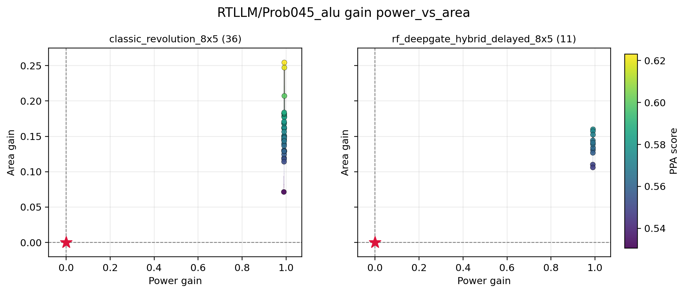

T96 RF DeepGate Hybrid Direct PPA
T96 combines MasterRTL RF timing model-state, RTL branching, and an official DeepGate pooled netlist axis. The headline comparison is reference-complete, but the hybrid remains below classic on aggregate HV and front breadth.
| Method | Mean HV | Mean Pareto Points | Mean Ref-Beating | HV Wins |
|---|---|---|---|---|
classic_revolution_8x5 |
0.1406 | 3.25 | 8.00 | 6 |
rf_deepgate_hybrid_delayed_8x5 |
0.1199 | 1.625 | 5.375 | 2 |
The representative plot below shows
RTLLM/Prob045_alu in gain-space area versus power. Classic
covers a larger area-gain range with many more valid candidates.
